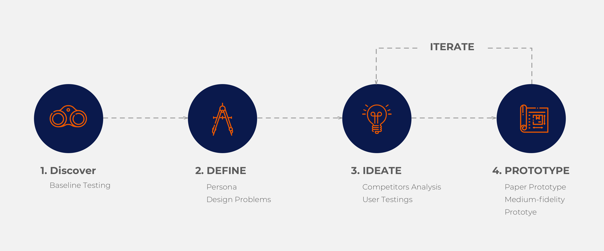
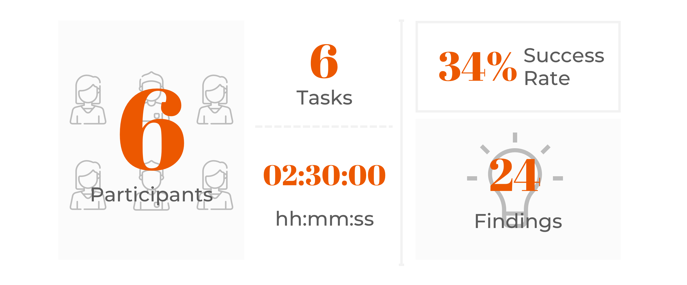

Invention Hub Web App
An Ai-powered Web App to optimize the user experience of submitting the idea form
Overview
This is the internship project in cooperation with TurboPatent, a Seattle-based tech company which aims to reinvent the patent process with AI technology. The goal of the project is to define the current design problems and to explore the users need on the Web App device.
Project Scope
September, 2018 - November, 2018
Roles: UX Designer
Tools: Sketch, ADOBE XD
1. Discover
Well-thought-out design always starts from listening
Before the baseline testing, I have done research on patent application process and had a meeting with the Chief Product Officer who is experienced with working with the users. We listed the assumptions of the possible challenges of using the Invention Hub and drafted the baseline test guide, from research goal setting, measurement, recruiting plan, to detailed testing tasks. The 3 key goals of baseline testing are:
- Establish an user performance baseline for the Invention Hub App prior to any design changes
- Set up and validate the user performance measures
- Identify the potential design concerns to be addressed in order to improve the user experience
During the testing, I had tons of times that I would really like to slap on my forehand and shout “why I did not think of this back then?” Listening to the users’ thinking process is always the one thing to let us know what would help their life better.
2. Define
Affinity Diagramming
After collecting all the user feedback, I used the Affinity Diagramming to organized and analyzed the data. The problems are divided into four categories: Navigation, Data Entry, Drawing, and Collaboration in which are separated into different priority levels
{kind=link}

Persona
Based on the users profiles in the baseline testing, the two user personas are drown out as a great reference asset for our further design: the inventors and the product manager.
{kind=link}
{kind=link}
3. Ideate
“Don’t conform the users; instead, confirm the product to fit the users’ habits” - Chief Product Officer
To analyze if the idea is innovative compared to the existing products, there is a list of questions to be clarified. However, since most of the users indicated that they had no idea where and how to start describe an idea because they are not professional in this industry. We are thinking to make the idea capture easier by not only making the questions more conversational but also providing alternative for the users to start off their idea from what they have at hand.
Flow Chart
We outlined the the flow chart based on the different scenarios

4. Prototype
Paper Prototype
Bring the most optimized experience to the users at every stage is a way of building the positive brand awareness
{kind=link}


To make the user experience the low-fidelity prototype, it is always important to make them feel fun and not finding the facilitator flapping the papers all around. I designed a laptop screen cardboard which the screen can be dragged from one page to another.
The users enjoyed the testing phases and brought up invaluable feedback during the testing session. The task success rate of the paper prototype testing jumped from 34% to 88% and we collected more insights for building the prototype
Hi-fi Prototype
After several ideation, we have the final Hi-fi prototype. Wacth the short demo now: